The SHARC IoT sensor adapter
Get any sensor on your network.
Any sensor. Any network. The SHARC powers an industrial sensor, captures its reading in real time, and publishes telemetry over MQTT — so you can measure what matters without a five-figure OEM quote.
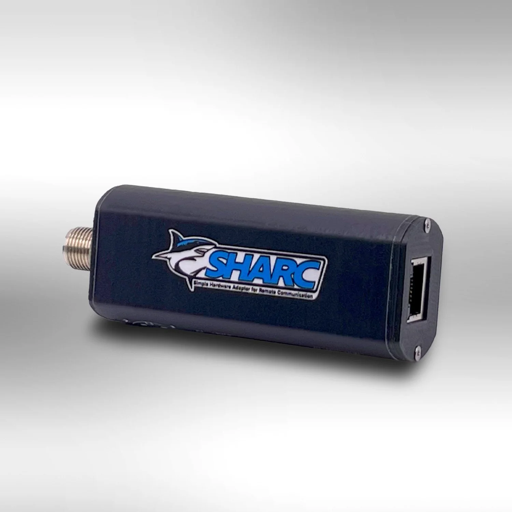
Why SHARC
Built for the floor, simple for everyone.
Universal compatibility
Supports a wide range of sensors, machine types, and platforms — connect multiple assets with ease.
Real-time monitoring
Instant insight into your operation, so you can make informed decisions quickly.
User-friendly
An intuitive design makes it easy to monitor and manage devices — no deep technical expertise required.
Scalable
Start with one measurement and grow; add new devices as your operation expands.
Predictive maintenance
Spot issues before they become failures — reduce downtime and costly breakdowns.
Secure by design
A one-way data diode introduces no new attack surface — safe even for classified environments.
Choose what to measure
Pick a sensor. Capture the real world.
Select a digital or analog industrial sensor from any manufacturer — the possibilities are endless.
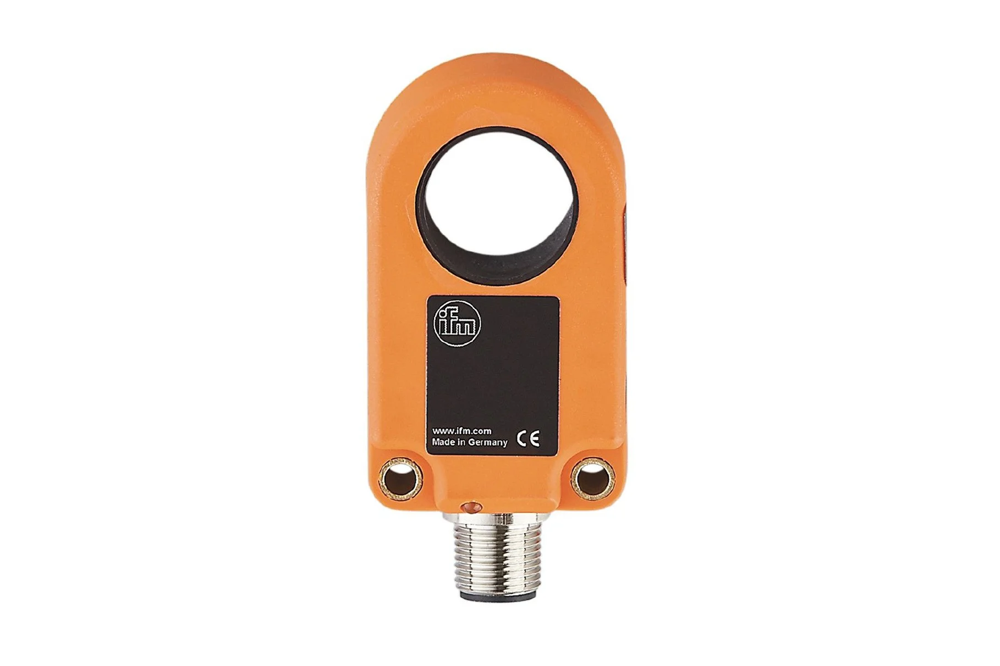
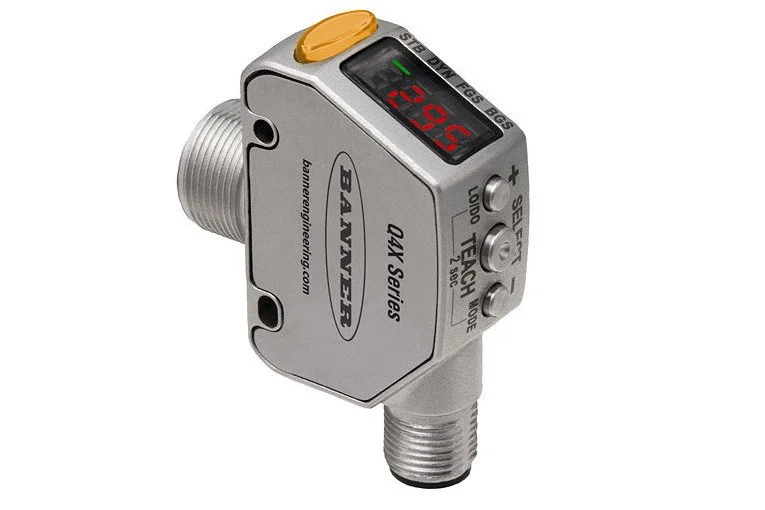
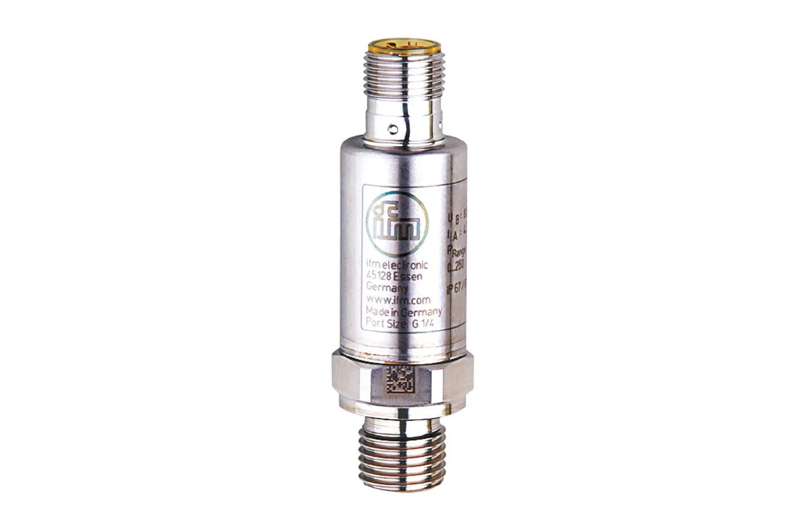
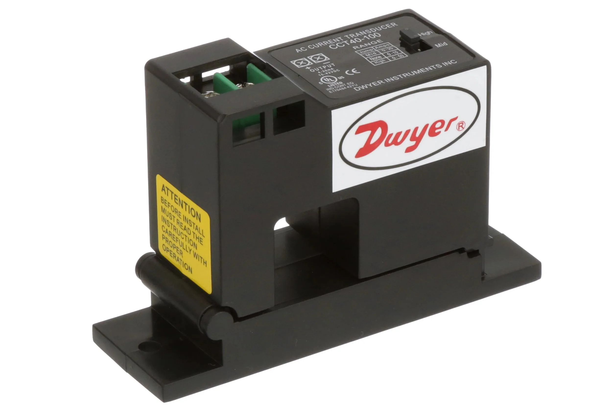
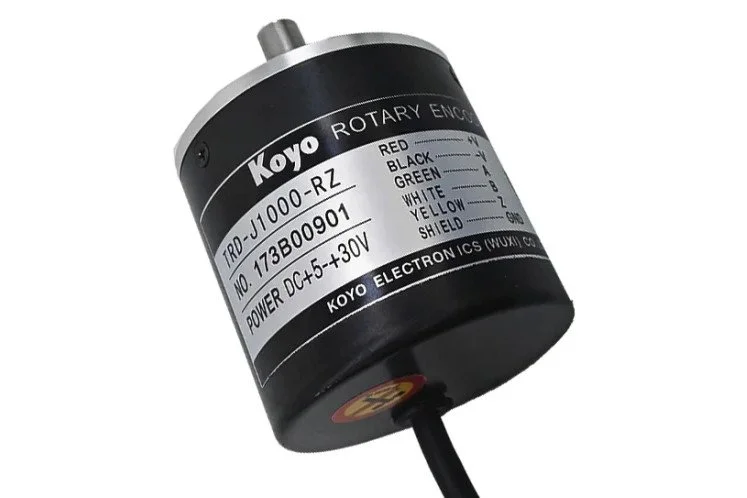
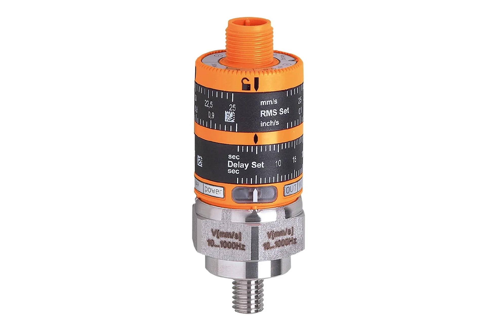
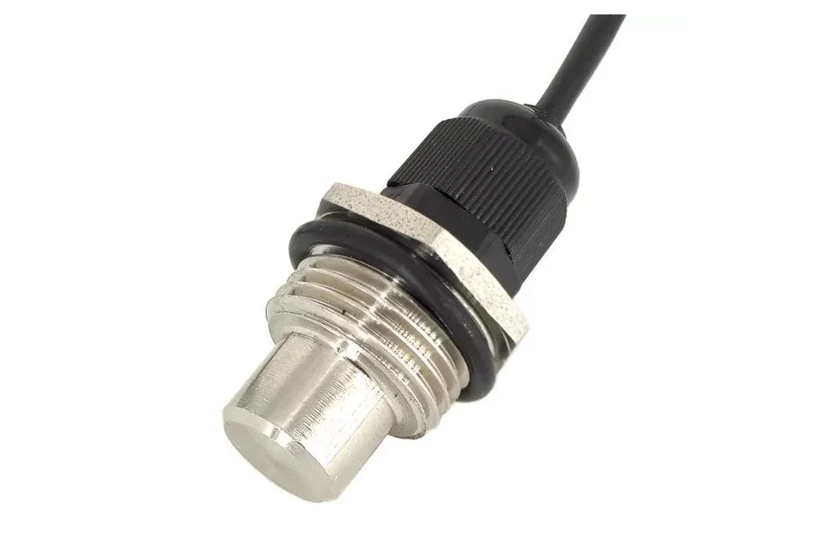
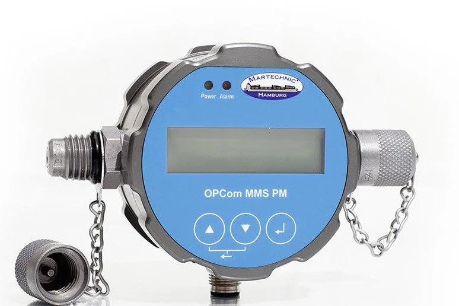
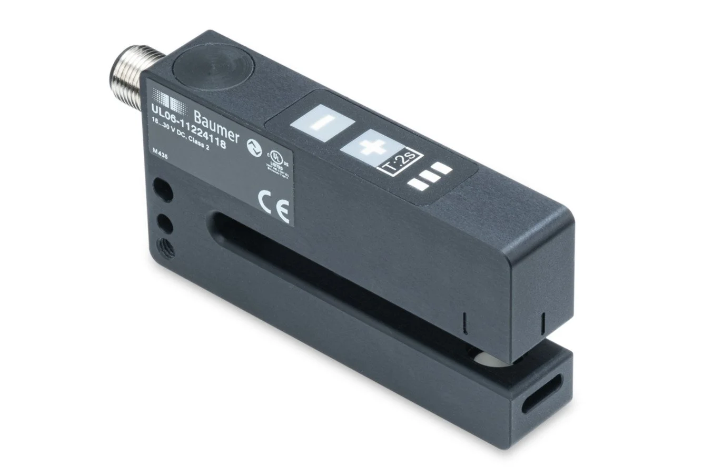
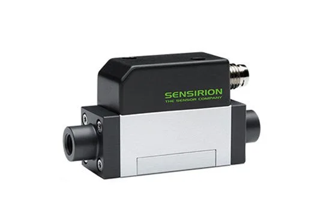
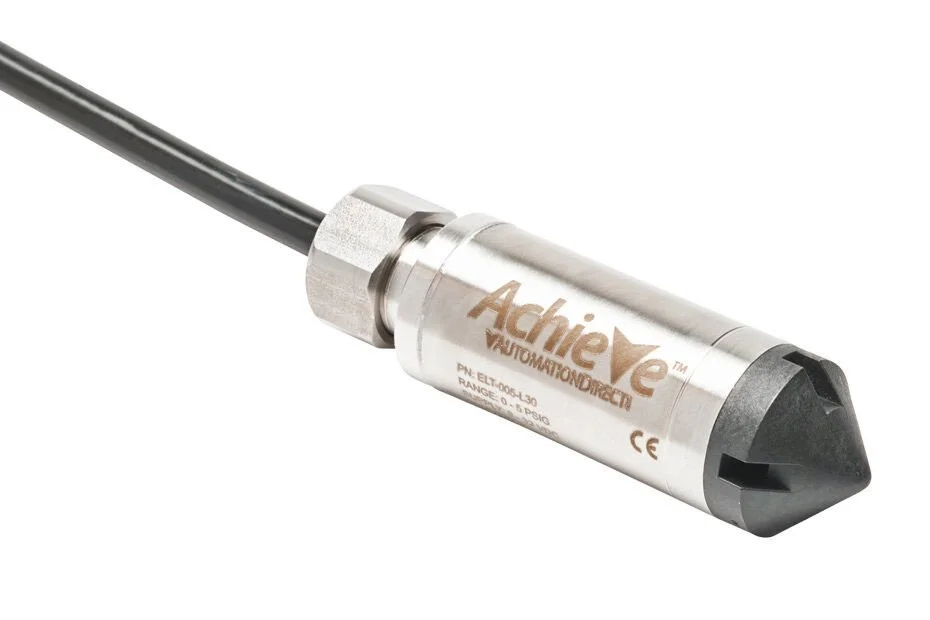
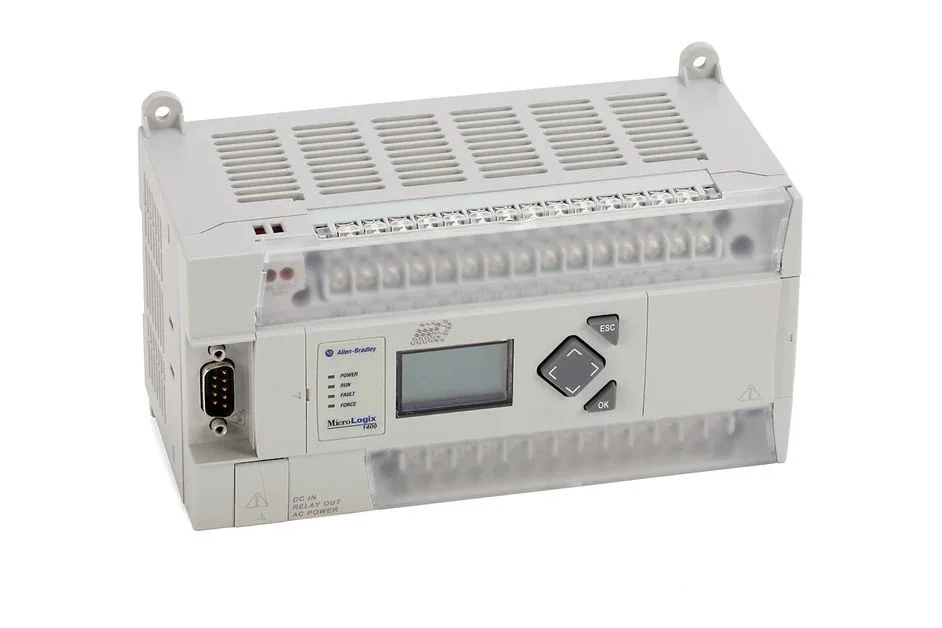
This is just a sample. Tell us what you want to measure and we'll build a kit that works for you.
Open by design
Ingest into any platform.
We don't lock you into any software. The SHARC speaks modern, open standards — JSON over MQTT — so it drops straight into the tools you already use: Kepware, Ignition, Splunk, InfluxDB, Grafana, IoTDB, Node-RED, and more.
- JSON payloads over MQTT
- Direct ingestion via MTConnect, OPC-UA, SparkplugB
- iPhone and desktop apps to manage your fleet
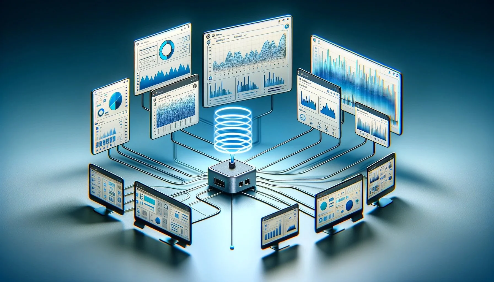
Security
Production behind closed doors.
In classified and high-security environments, the SHARC removes cyber risk. You choose precisely what to measure and nothing more. As a one-way data diode, it makes maintenance data-driven without ever introducing a new attack surface — simple, accessible, exactly where IT and OT intersect.
Documentation & downloads
Spec sheets, setup, and support.
FAQ
SHARC, answered.
What is the SHARC?
The SHARC is a universal IoT sensor adapter. It powers an industrial sensor, captures its reading in real time, and publishes that telemetry over MQTT — so you can get any sensor onto your network without a custom integration.
What can a SHARC measure?
Anything a digital or analog industrial sensor can sense: production throughput and part count, pressure, temperature, current, vibration, flow, fluid level, rotational speed, oil particle count, and label detection — among others. You can also tap an existing PLC output.
Which sensors and machines does it work with?
Any digital or analog industrial sensor, from any manufacturer. You don’t have to replace existing equipment — add a brand-new measurement or tap a machine you’ve owned for years.
How does SHARC get data into my software?
It publishes open JSON payloads over MQTT, so it drops into the tools you already use — Grafana, Ignition, Splunk, InfluxDB, IoTDB, Node-RED, and more — with direct ingestion via MTConnect, OPC-UA, and SparkplugB. There’s no proprietary lock-in at the source.
Is SHARC secure enough for classified or high-security environments?
Yes. SHARC can operate as a one-way data diode: readings flow out for monitoring, but nothing can flow back in. It introduces no new attack surface, which makes it safe even for classified environments.
How does the cost compare to an OEM connectivity quote?
It’s a fraction of a typical OEM quote. In one case, a customer’s OEM connectivity quote was about ten times the cost of two SHARC units. For exact pricing on your setup, get in touch.
Do I need a software platform or deep technical expertise to use it?
No. SHARC is built to be simple to set up and manage, with iPhone and desktop apps for your fleet. Because it uses open standards, you’re never locked into one platform.
Two SHARCs can answer the question an OEM quotes a fortune for.
Tell us the metric you need. We'll get you the sensor, the SHARC, and the data — fast.
More from the toolkit